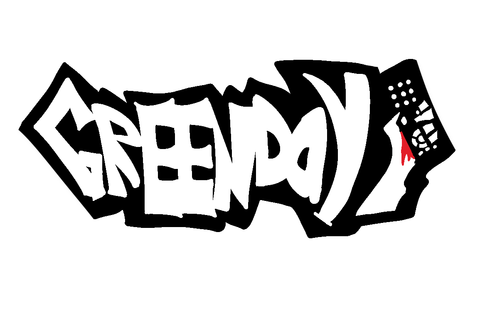

Sobre
Informações gerais sobre o projeto Green Day.

O green Day é um projeto de electron criado com o intuito de facilitar o acesso a filmes sem precisar necessariamente de um streaming. criado com uma equipe de 4 pessoas em uma semana para uma atividade de ads no grau técnico.
Como o projeto funciona
Os filmes ficam cadastrados no arquivo renderer.js, dentro da lista movieCatalog. As páginas leem essa lista para montar automaticamente os recomendados, os recentes, o catálogo e o player.
Como editar
Para adicionar filmes, abra renderer.js, copie um objeto da lista, troque as informações e salve. As instruções estão comentadas no começo do arquivo.